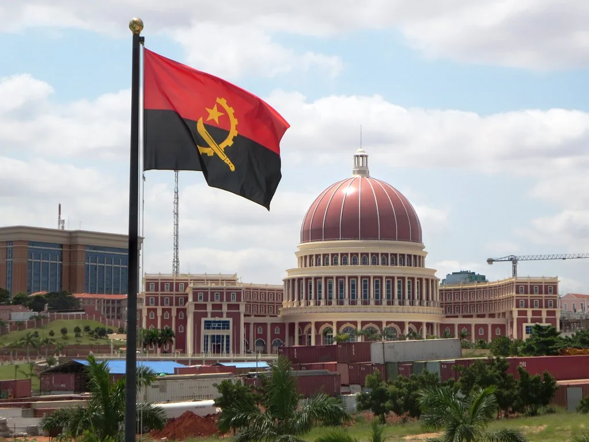
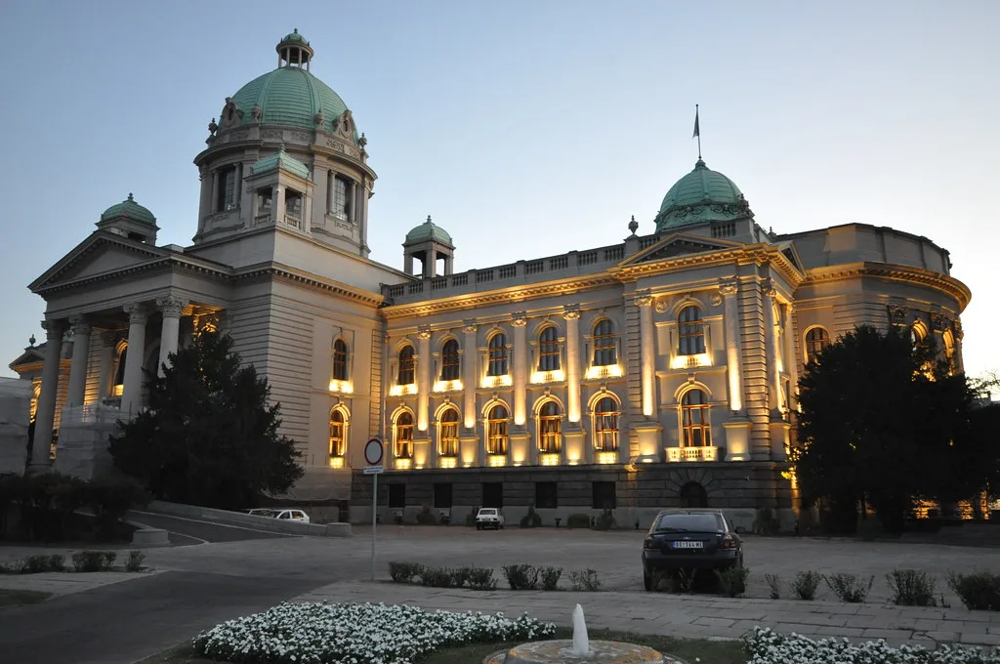

2년차 정기국회 국정감사가 마무리되자마자 여야의 전선은 곧바로 예산과 입법으로 옮겨갔다. 정부가 제출한 내년도 예산안은 총지출 기준 820조9000억원으로 역대 최대 규모이며, 법정 처리 시한은 12월 2일이다. 국감 기간 내내 날카로운 신경전을 벌였던 더불어민주당과 국민의힘은 국감 종료 하루 만에 곧바로 예산안 심사에 돌입했고, 정치권에서는 연말까지 강 대 강 대치가 이어질 것이라는 전망이 나온다. 국감이 '검증 전쟁'이었다면 이제는 '곳간 전쟁'이 시작된 셈이다.
이번 예산 심사의 최대 격전지는 162조3000억원 규모로 편성된 '미래대응기금'이다. 정부는 반도체 호황 등에 따른 세수 여력을 바탕으로 청년·성장동력·지방·교육인재 등 4개 분야에 45조4000억원을 투입하고, 나머지 여유 자금 가운데 12조5000억원은 국채 신규 발행 축소에 쓰겠다는 구상을 내놓았다. 재정 건전성을 다지면서도 인공지능(AI) 산업 전환기에 선제적으로 투자해야 한다는 논리다.

그러나 국민의힘은 이 기금을 '청와대 쌈짓돈'에 가깝다고 규정하며 정면으로 맞서고 있다. 기금 사업비 45조원 가운데 17조5770억원, 비중으로는 38.7%가 현금·수당성 지출이라는 점을 문제 삼는다. 전체 140개 세부 사업 중 아동기본수당, 청년미래적금, 농어촌 기본소득 시범사업 등 14개가 현금 지원성 사업으로 분류된다는 주장이다. 국민의힘은 미래대응기금의 여유 자금 104조4000억원을 국가채무 상환에 돌리는 쪽으로 방향을 틀어야 한다고 보고, 전체 예산안에서 총 134조원 규모의 삭감을 목표로 세운 것으로 알려졌다.
정부가 함께 제출한 국가재정법 개정안도 새로운 쟁점으로 떠올랐다. 기금의 주요 항목별 지출액을 30% 범위 안에서 국회 의결 없이 변경할 수 있도록 하는 내용이 담겨 있는데, 국민의힘은 국회 심의를 거친 예산을 정부가 상당 폭 임의로 조정할 수 있게 되면 국회의 예산 통제권 자체가 약해진다고 반발한다. 단순한 금액 싸움을 넘어 재정 운용의 틀을 둘러싼 권한 다툼으로 번지는 모양새다.

반면 민주당은 지금이야말로 재정을 투입할 때라는 입장이다. 나라 재정이 비교적 양호한 상황에서 전 세계적인 AI 산업 대전환의 물결에 한국이 주도적으로 올라타야 하며, 미래대응기금을 통한 투자가 국가 디지털 경쟁력을 끌어올릴 기반이 된다는 논리를 앞세운다. 정부가 반도체 수출 호조로 확보한 세수 여력을 이번 기회에 미래 성장동력으로 전환하지 않으면, 다른 나라와의 기술 경쟁에서 시기를 놓칠 수 있다는 우려도 깔려 있다.
예산안 외에도 여야는 각종 입법 현안을 놓고 충돌을 예고하고 있다. 민주당은 정기국회 회기 내 처리를 목표로 여러 법안을 밀어붙일 방침이고, 국민의힘은 이에 맞설 대응 전략을 짜고 있는 것으로 전해진다. 예산안과 법안 처리가 동시에 맞물리는 구조라 양측의 신경전은 한층 치열해질 수밖에 없다.
법정 처리 시한인 12월 2일까지 남은 시간은 한 달 남짓이다. 과거에도 예산안이 법정 기한을 넘겨 처리된 사례가 반복됐던 터라, 이번에도 협상이 막판까지 가는 '지연전'이 되풀이될 가능성이 제기된다. 미래대응기금을 둘러싼 입장 차가 워낙 커서 단기간에 접점을 찾기는 쉽지 않을 것이라는 관측이 우세하며, 연말 정국의 분수령이 될 것이라는 전망이 나온다.